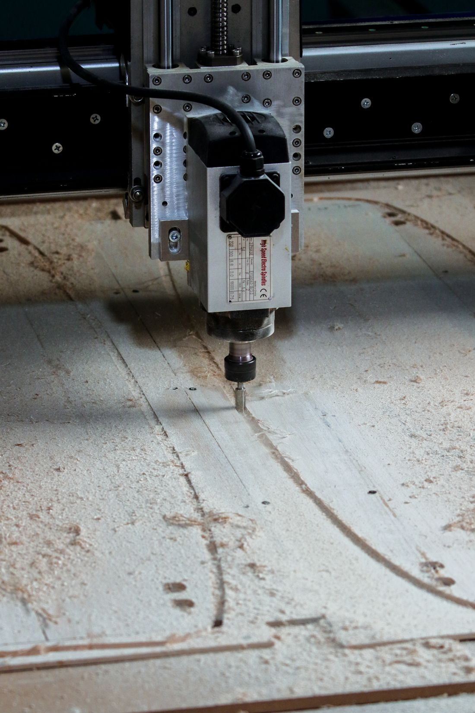
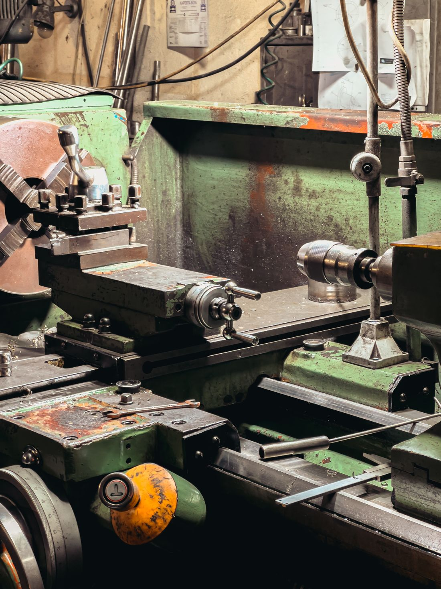

Usinagem sob desenho
Consulta inicial para peça com desenho técnico. Nenhum arquivo é enviado por esta demonstração.
Iniciar especificação ↗Organize os dados iniciais de uma peça para começar uma conversa de cotação. Tipo, material, quantidade e prazo desejado no mesmo lugar.
Descrever demanda ↗
Esta interface ajuda a estruturar uma consulta inicial. Ela não declara tolerâncias, máquinas, certificações ou capacidade que ainda não foram verificadas.
Consulta inicial para peça com desenho técnico. Nenhum arquivo é enviado por esta demonstração.
Iniciar especificação ↗Consulta inicial sobre lotes e repetibilidade, sujeita a análise técnica posterior.
Iniciar especificação ↗Imagem de torno licenciada para referência visual. Não indica equipamento, capacidade ou instalações próprias.

Um resumo legível antes de preparar a consulta. Informar os dados não gera orçamento nem promessa de produção.
Sem JavaScript, anote peça ou serviço, material, quantidade e prazo desejado para consulta manual. Contato de demonstração: +55 00 00000-0000. Nenhum orçamento é recebido.
Demonstração fictícia. Fábrica, serviços e contato são exemplos; nenhum orçamento será recebido.
Parque de máquinas, dimensões e materiais atendidos.
Tolerâncias, inspeções e certificações aplicáveis.
Prazos, preço e critérios comerciais.